pada mac atau linux buka terminal nya lalu arahkan menggunakan perintah cd
contoh penggunaan perintah cd untuk mengarahkan terminal ke folder tertentu :
misal kita ingin mengarahkan terminal kita dari folder personal dan masuk ke folder dev
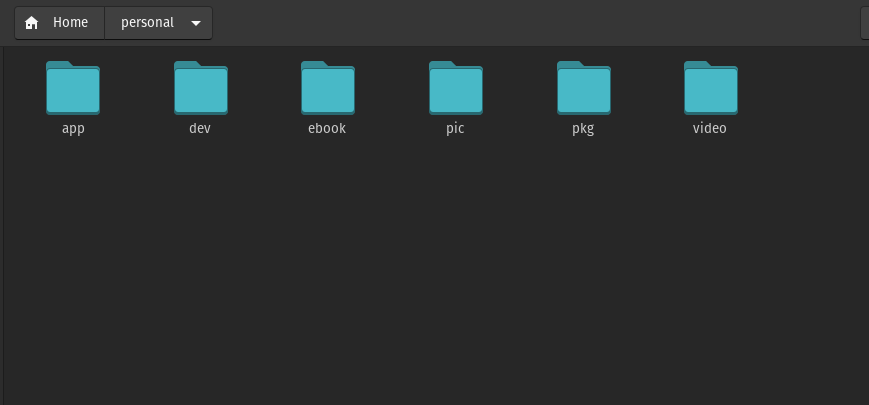
pada terminal kita akan terlihat seperti ini
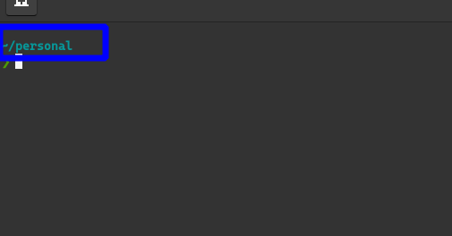
untuk pindah ke folder dev pada terminal kita mengetikkan "cd dev"(tanpa tanda kutip)
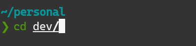
hasilnya pada terminal kita akan seperti ini
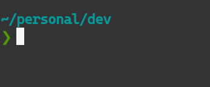
agar memudahkan kita melihat isi folder pada terminal kita ketikkan perintah "ls"(tanpa tanda kutip)
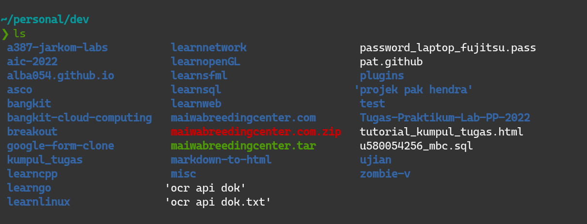
gambar di atas adalah isi dari folder dev
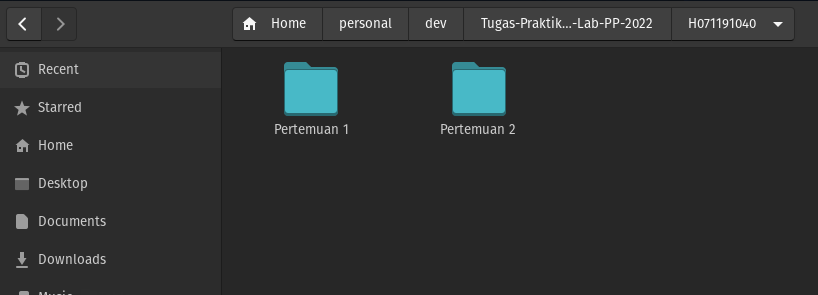

akan terlihat tulisan folder nim berwarna merah, yang berarti ada file yang belum dikumpul
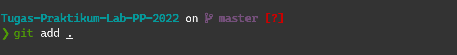
{kind=link}
lalu ketik "git status" lagi
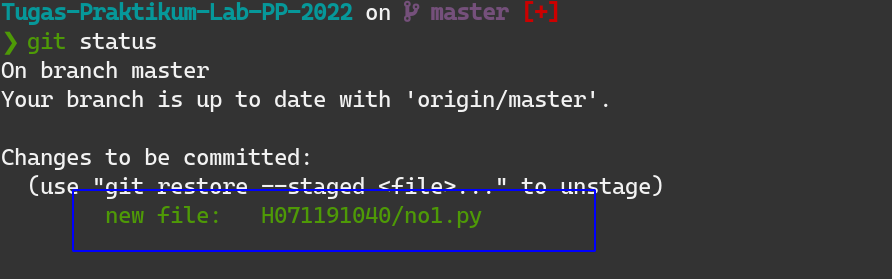
{kind=link}
sekarang akan terlihat tulisan file kode .py yang telah kita masukkan ke dalam folder nim berwarna hijau, yang berarti file siap dikumpulkan
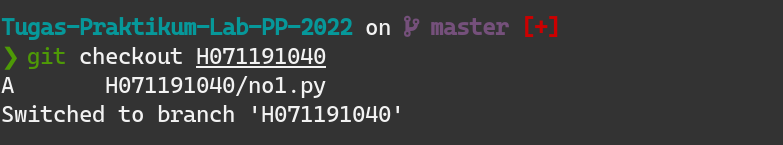
{kind=link}
kumpul tugas 1" adalah pesan yang ingin dikirimkan bisa kalimat yang lain
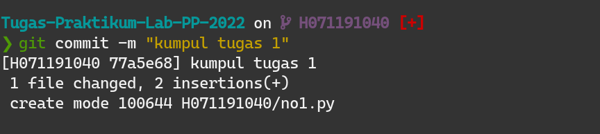
{kind=link}
pada Windows, apabila muncul gambar seperti ini
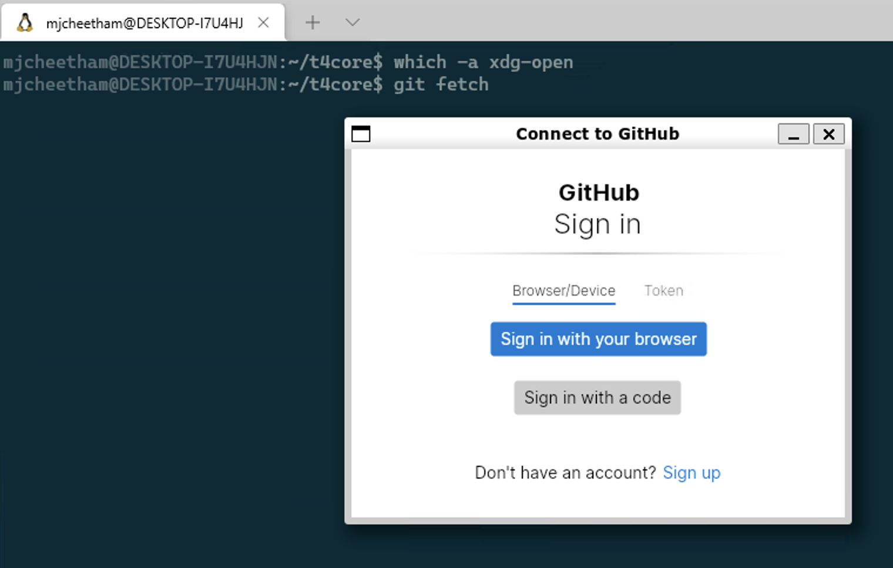
{kind=link}
klik "Sign in with your browser
setelah berhasil akan tampil seperti berikut
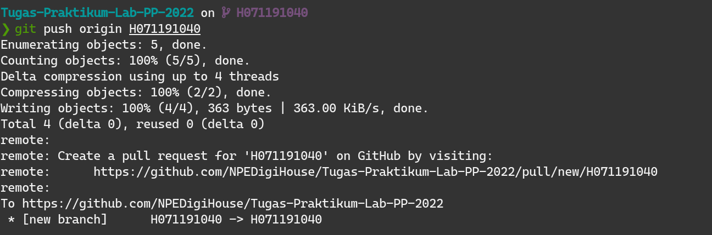
{kind=link}
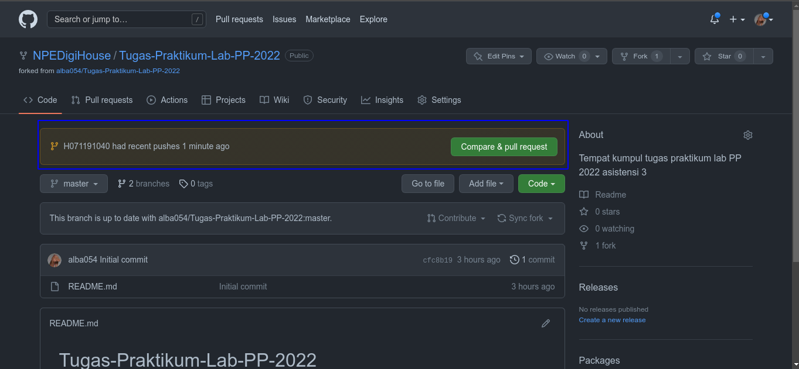
{kind=link}
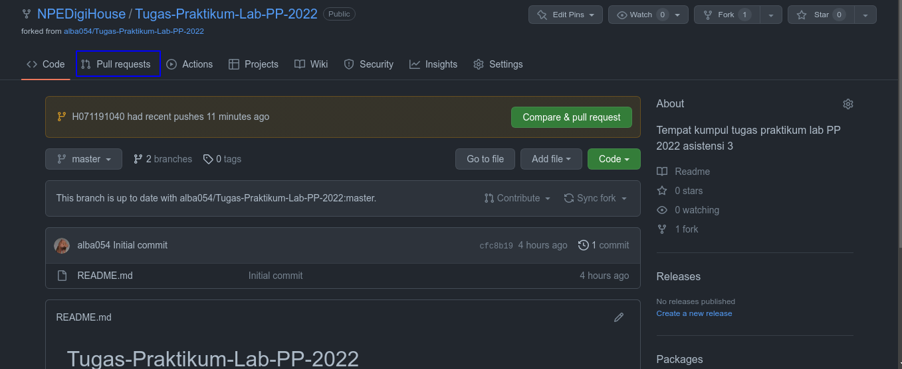
{kind=link}
klik Pull request
lalu klik New pull request
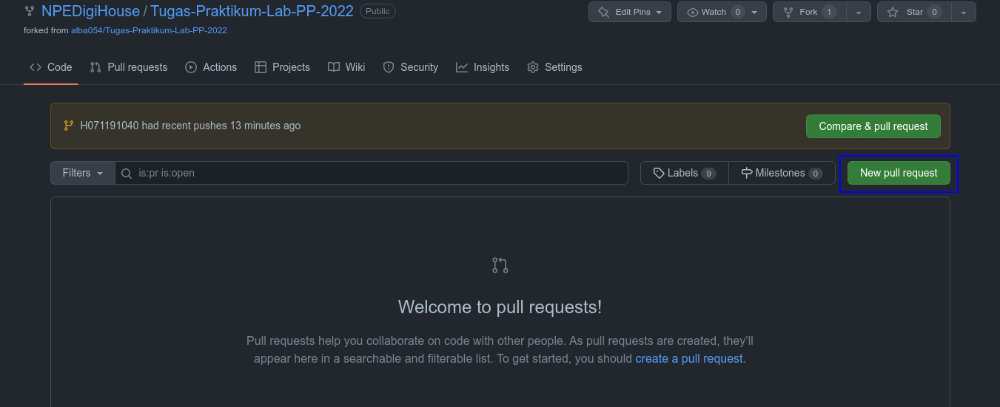
{kind=link}
setelah itu ganti master(atau main) menjadi nim
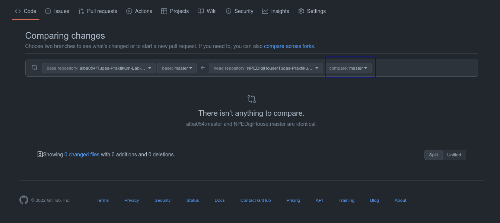
{kind=link}
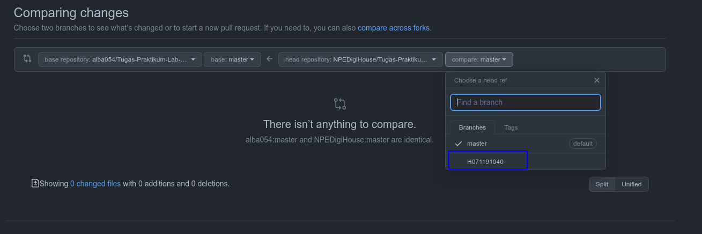
{kind=link}
lalu klik Create pull request
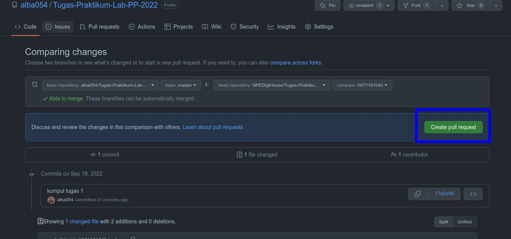
{kind=link}
lalu isi komen pada kolom "Leave a comment"(jika ada
setelah itu klik "Create pull request
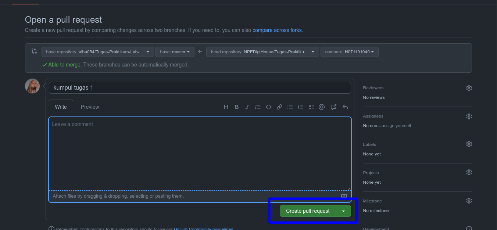
{kind=link}